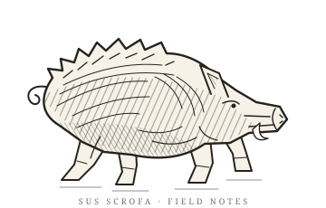

FIG. 01 / PEOPLE, NOTES & TOPICS
- 멤버
- 노트
- 주제
노트가 쌓이면 연결이 나타납니다.
DESIGNING DATA-INTENSIVE APPLICATIONS
각자의 읽기가 모여, 하나의 지식이 되도록.

01 / FROM THE READING ROOM
누가 무엇을 읽었는지, 노트에서 직접 전합니다.
02 / A NETWORK OF IDEAS
멤버 → 노트 → 주제. 원을 끌어 연결을 살펴보세요.
공통 주제부터 표시하고, 노트를 누르면 태그 전체가 펼쳐집니다.
노트가 쌓이면 연결이 나타납니다.
두 명 이상이 다룬 주제를 우선 표시하며, 세 개보다 적으면 노트 연결 수가 많은 주제로 채웁니다. 이 지도는 작성·태그 관계이며 의미적 추론이 아닙니다.
03 / THE PEOPLE BEHIND THE PAGES
노트 1편 = 40 XP · 100 XP마다 레벨 업.
활동 칸은 노트 작성일 기준이며, 커밋 수는 집계하지 않습니다.
04 / THE LATEST ENTRIES
노트 작성일 기준. Git 커밋 기록은 제공되지 않습니다.